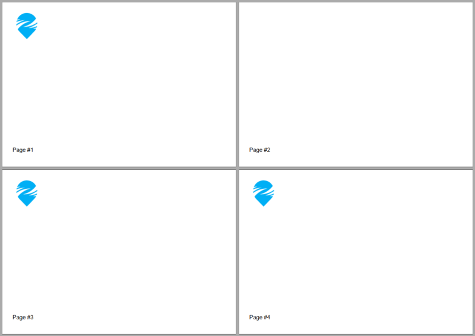
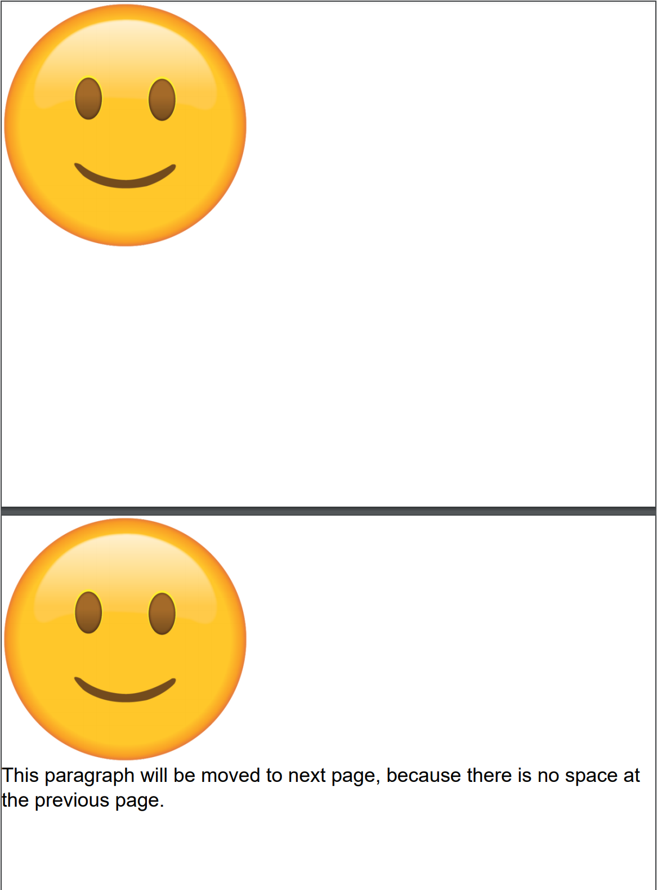
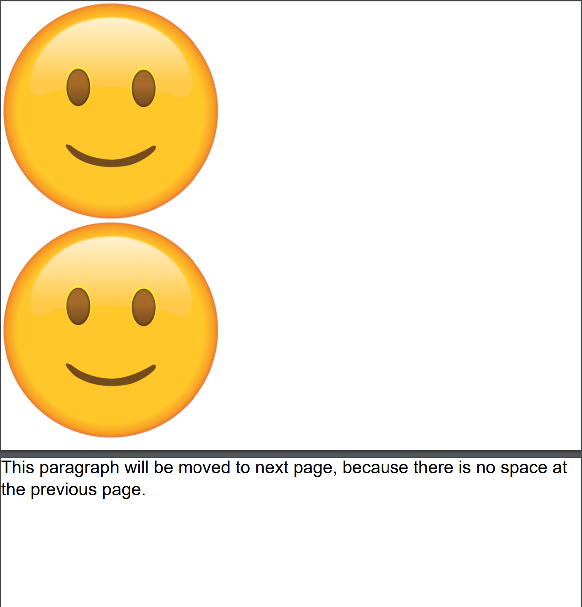

Adding Image
Brief
The article describes how to add and configure an image.
Details
You can add images to a section, a
repeating area, and table cells
and add inline images to a paragraph.
The library allows you to add images from .jpg and .png files or from an array of bytes.
You can add images using methods of ImageExtensions,
and configure image settings using methods of ImageBuilder
and InlineImageBuilder.
Each image has the following formatting:
Parameter |
Default value |
Methods for configuration (available both in ImageBuilder
and InlineImageBuilder) |
Scaling mode |
None
|
SetScale
|
Borders |
No borders (Stroke.None, Color.None, 0f) |
SetBorder,SetBorderWidth, SetBorderColor, SetBorderStroke;
additional methods for configuring the corresponding parameters for each border side available in ImageBuilder:
SetBorderColor,
SetBordersStroke,
SetBorderWidth
|
Margins - additional margins for an image/inline image |
No additional margins |
SetMargins - to set all margins to the same value or to set different values for each margin, SetMarginLeft, SetMarginTop, SetMarginRight,
SetMarginBottom.
|
Paddings |
No paddings |
SetPaddings to set all paddings to the same value or to set different values for each padding, SetPaddingLeft, SetPaddingTop, SetPaddingRight,
SetPaddingBottom.
|
Alignment |
Left
|
SetAlignment
|
Page break (available only for images) |
No page break |
ImageBuilder.SetPageBreak
|
Keeping with the next element (available only for images) |
True
|
ImageBuilder.SetKeepWithNext
|
If you do not specify formatting settings for an image, they will have their default values defined by the default image style.
You can create a style and apply it to all images on the document, section, or repeating area level using the method SetImageStyle,
on the paragraph level using the method SetInlineImageStyle, and to particular images using the method ApplyStyle.
For more on working with styles, see the article Formatting and Styles.
Image Size and Scaling Mode
The image size in a document depends on the used scaling mode.
The scaling mode defines whether the image width and height should be specified by a user, taken from the image file, or defined by the library.
You can use one of the following scaling modes (see the ScalingMode enumeration):
None (the default scaling mode) - you can specify the image size, but if you don't, the library defines it automatically.
If you specify both width and height, and the image fits into the available area,
it is drawn with the specified size.
If you specify only the height or the width, the other side is defined in accordance with the aspect ratio in the original image file.
If you specify both the width and height, but the image doesn't fit into the available area,
it is scaled down proportionally to fit into the available area.
If you do not specify the image size, and it fits into the available area, the image is drawn
with its original size.
If you do not specify the image size, and it doesn't fit into the available area, the image is
scaled down proportionally to fit into the available area.
OriginalSize - the image size is taken from the image file.
If the image fits into the available area, the image is drawn with its original size.
If the image doesn't fit into the available area, the library throws the exception ImageLargerFreeWorkArea.
If you specify the image size, it is ignored or an exception is thrown.
UserDefined - the image size is defined by the user.
If you specify both width and height, and the image fits into the available area, it is drawn with the specified size.
If you specify only the height or the width, the other side is defined in accordance with the aspect ratio in the original image file.
If the specified height or width does not fit into the available area, the library throws the exception ImageLargerFreeWorkArea.
Stretch - the image is stretched by the width of the available area and the height is defined in accordance with the aspect ratio
in the original image file.
If the image height does not fit into the current page, the image is drawn on the next page.
If the image height does not fit into an entire page, the library throws the exception ImageLargerFreeWorkArea.
If you specify the image size, the library throws the exception ScalingModeIsNotSuitableErr.
You can set both image width and height using one of SetSize methods of
ImageBuilder or
InlineImageBuilder, or set the width and the height separately
using the SetHeight and SetWidth methods respectively.
For your convenience, the image width and height is set in pixels, as you see it in the image properties.
The library renders pixels into points internally by using the formula:
Point Value = Pixel Value * InchFactor / PixelFactor
Now the library has hardcoded PointFactor = 1F, InchFactor = 72F, PixelFactor = 96F, etc.
For example, if you have an image with width = 180 pixels, you will get the image rendered as 135 points width.
Page Break
When you need to place an image on a new page, insert a page break before the image using the method SetPageBreak().
If you call this method without the parameter, the image will be placed on the next page or remain on the current page if it is located at the beginning of the page.
You can specify the page on which the image will be placed in the method parameter. The available options are:
NextPage (the default page break) - the image is placed on the next page or remains on the current page if it is located at the beginning of the page.
NextEvenPage - the image is placed on the next even page or remains on the current page if it is located at the beginning of an even page.
NextOddPage - the image is placed on the next odd page or remains on the current page if it is located at the beginning of an odd page.
The available page breaks are listed in the PageBreak enumeration.
See Example 10 below for a code illustration.
See also
Adding Section
Adding Content to Paragraph
Formatting and Styles
Examples
Example 1. Add an image, set its size and alignment Show
Example 1. Add an image, set its size and alignment Hide
//Set the path to the image file:
var imagePath = "imageFile.png";
DocumentBuilder.New()
.AddSection()
.AddImage(imagePath, new XSize(100, 100))
.SetAlignment(HorizontalAlignment.Center)
.ToDocument().Build("Result.pdf");
The above code will generate the following:
 See the document
See the document
Example 1a. Add an image, set its size and alignment variant 2 Show
Example 1a. Add an image, set its size and alignment variant 2 Hide
//Set the path to the image file:
var imagePath = "imageFile.png";
var document = DocumentBuilder.New();
document.AddSection(section =>
{
var img = section.AddImage(imagePath, new XSize(100, 100));
img.SetAlignment(HorizontalAlignment.Center);
});
document.Build("Result.pdf");
The above code will generate the following:
See the document
Example 2. Add an image with the original size and set borders Show
Example 2. Add an image with the original size and set borders Hide
//Set the path to the image file:
var imagePath = "smile-emoji.png";
DocumentBuilder.New()
.AddSection()
.AddImage(imagePath)
.SetAlignment(HorizontalAlignment.Left)
.SetBorder(Stroke.Dashed, Color.Red, 0.5f)
.ToDocument().Build("Result.pdf");
The above code will generate the following:
 See the document
See the document
Example 3. Add an image with the original size Show
Example 3. Add an image with the original size Hide
//Set the path to the image file:
var imagePath = "smile-emoji.png";
DocumentBuilder.New()
.AddSection()
.AddParagraphToSection("This image original size")
.AddImage(imagePath, ScalingMode.OriginalSize)
.ToDocument().Build("Result.pdf");
The above code will generate the following:
 See the document
See the document
Example 4. Add an image with the user-defined size Show
Example 4. Add an image with the user-defined size Hide
//Set the path to the image file:
var imagePath = "smile-emoji.png";
DocumentBuilder.New()
.AddSection()
.AddImageToSection(imagePath, new XSize(64, 64), ScalingMode.UserDefined)
.AddImage(imagePath, new XSize(256, 256), ScalingMode.UserDefined)
.ToDocument().Build("Result.pdf");
The above code will generate the following:
 See the document
See the document
Example 5. Add an image with the stretch size Show
Example 5. Add an image with the stretch size Hide
//Set the path to the image file:
var imagePath = "imageFile.png";
DocumentBuilder.New()
.AddSection()
.AddTable().SetWidth(200)
.AddColumnToTable().AddColumnToTable()
.AddRow()
.AddCell().AddParagraph("Stretch image").ToRow()
.AddCell().AddImage(imagePath, ScalingMode.Stretch)
.ToDocument().Build("Result.pdf");
The above code will generate the following:
 See the document
See the document
Example 6. Add an inline image to a paragraph Show
Example 6. Add an inline image to a paragraph Hide
//Set the path to the image file:
var imagePath = "imageFile.png";
DocumentBuilder.New()
.AddSection()
.AddParagraph("Inline image in paragraph:")
.AddInlineImage(imagePath, 16, 16, ScalingMode.UserDefined)
.ToDocument().Build("Result.pdf");
The above code will generate the following:
 See the document
See the document
Example 7. Add an inline image with margins Show
Example 7. Add an inline image with margins Hide
//Set the path to the image file:
var imagePath = "imageFile.png";
DocumentBuilder.New()
.AddSection()
.AddParagraph()
.AddTextToParagraph("Inline image")
.AddInlineImage(imagePath, new XSize(16, 16),
ScalingMode.UserDefined)
.SetMarginLeft(8)
.SetMarginRight(8).ToParagraph()
.AddText("in paragraph.")
.ToDocument().Build("Result.pdf");
The above code will generate the following:
 See the document
See the document
Example 8. Add an image with borders of different color Show
Example 8. Add an image with borders of different color Hide
//Set the path to the image file:
var imagePath = "smile-emoji.png";
DocumentBuilder.New()
.AddSection()
.AddImage(imagePath)
.SetSize(40, 40)
.SetAlignment(HorizontalAlignment.Right)
.SetBorder()
.SetBorderColor(Color.Red, Color.Blue, Color.Yellow, Color.Green)
.ToDocument().Build("Result.pdf");
The above code will generate the following:
 See the document
See the document
Example 9. Add an image with the border set in a style Show
Example 9. Add an image with the border set in a style Hide
var styleMain = StyleBuilder.New()
.SetBorderColor(Color.Blue)
.SetBorderWidth(0.75f);
var styleImage = StyleBuilder.New(styleMain)
.SetBorder(Inherit.Parent)
.SetBorderStroke(Stroke.Dotted);
//Set the path to the image file:
var imagePath = "smile-emoji.png";
//Create a document:
DocumentBuilder.New()
.AddSection().SetImageStyle(styleImage)
.AddImage(imagePath).SetSize(40, 40)
.ToDocument().Build("Result.pdf");
The above code will generate the following:
 See the document
See the document
Example 10. Add images with page breaks Show
Example 10. Add images with page breaks Hide
.AddSection()
.SetSize(PaperSize.C6)
// This image has to be left at the same page:
.AddImage(imagePath).SetScale(ScalingMode.UserDefined).SetSize(75, 70)
.SetPageBreak(PageBreak.NextPage)
.ToSection()
// This image has to be started from page #3:/
.AddImage(imagePath).SetScale(ScalingMode.UserDefined).SetSize(75, 70)
.SetPageBreak(PageBreak.NextOddPage)
.ToSection()
// This image has to be started from page #4:
.AddImage(imagePath).SetScale(ScalingMode.UserDefined).SetSize(75, 70)
.SetPageBreak(PageBreak.NextPage)
.ToSection()
.AddFooterToBothPages(20)
.AddParagraph()
.AddPageNumber("Page #")
.ToDocument()
The above code will generate the following:

See the document
Example 11. Keeping an image with the paragraph following it: Show
Example 11. Keeping an image with the paragraph following it: Hide
var imagePath = Path.Combine(Environment.CurrentDirectory, "Content", "Images", "ManualSamples", "smile-emoji.png");
DocumentBuilder.New()
.AddSection().SetMargins(0)
.AddImage(imagePath).SetSize(400, 400).SetScale(ScalingMode.UserDefined)
.ToSection()
.AddImage(imagePath).SetSize(400, 400).SetScale(ScalingMode.UserDefined)
.SetKeepWithNext()
.ToSection()
.AddParagraph("This paragraph will be moved to next page, because there is no space at the previous page.")
.SetFontSize(24)
.ToDocument()
.Build("Result.pdf");
The above code will generate the following:

See the document
If you use .SetKeepWithNext(false) for the same image, the document will look as follows:

back